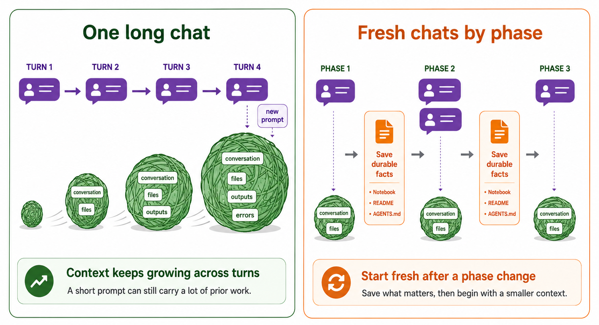

Context and Token Management#
AI-assisted analysis is not only about writing better prompts. It is also about managing the working context that the agent carries from one step to the next. This becomes especially important if you are using a pay-by-use plan or are working through an API. This page explains why context can become expensive, how notebook workflows can increase that cost, and how to decide when to continue a session versus starting fresh.
What context means#
A Codex session is a working conversation plus the project information Codex has loaded while helping you. That context can include:
system and project instructions
the current conversation
previous tool calls and their outputs
file contents Codex has read
notebook code and saved outputs
error messages, plots, tables, and summaries
Tokens are the pieces of text the model processes. Your typed prompt is only one part of the total. Every time you type a message to a model in a conversation, that message and response become part of the session history. In general, later model calls need enough of that history to answer coherently, so long sessions often send much more input than the few words in your newest prompt.
The simple mental model is: a long conversation gets carried forward. The exact accounting can vary because systems may compact old history into a summary, omit irrelevant details, or bill cached input differently. But the practical consequence is the same: old conversation, tool output, file contents, and notebook output can keep costing tokens after the original task is finished.
A short follow-up near the end of a long session can still be expensive because the model will need to process a large amount of accumulated context before answering.
{kind=link}

Context tends to grow across turns because prior conversation and tool results remain available to the model. Using smaller, more focused conversations keeps working context and token input smaller.#
Mental model
Think of context as the agent’s working memory for the current task. It is useful because it lets Codex remember what just happened. It becomes expensive when the working memory contains old scratch work, large outputs, or details from a task you have already finished.
Why context gets expensive#
Context usually grows for practical reasons:
Codex reads files to understand the project.
It runs commands and receives outputs.
It inspects notebook cells and saved notebook outputs.
It sees error traces during debugging.
It keeps earlier decisions available for follow-up prompts.
That is helpful while you are still working on the same problem. It is less helpful after the problem changes. If a session began with broad data profiling, then moved into chart design, then debugging, then lesson writing, each new request may carry context from all of those phases.
The important point is that tokens are not mostly the words you type. They are often the accumulated working record being sent back through the model so it can respond coherently.
Reading usage charts carefully
In the usage report, the cumulative token line means “how many tokens this session has used so far.” It is useful for seeing which sessions became large, but it is not the same thing as “how many tokens were sent as input on this turn.”
For that question, look at the turn-level input-token fields in the CSV or the interactive HTML report. Those values are a closer view of how much context was sent to the model for a turn. The per-turn token delta is broader: it includes the token usage added during that user turn, which may include multiple model calls, tool loops, output tokens, and reasoning tokens when those are recorded. Cached input tokens are part of the input count, not an additional cost on top of input. They are useful because they show how much of a turn’s input was recognized as repeated or cache-eligible context.
Why notebooks can amplify context#
Notebooks are valuable because they keep code, output, and explanation together. That same strength can make agent context larger:
Data previews can include many rows and columns.
Plotting errors can produce long stack traces.
Saved cell outputs can be read back by the agent.
Repeated profiling can rediscover the same file shapes, schemas, and counts.
Notebook-editing tools may read cells, edit cells, run cells, then read cells again to verify the result.
This does not mean notebooks are bad for Codex. It means notebook work needs boundaries. Keep durable analysis in the notebook, but avoid repeatedly asking the agent to reread large outputs when a smaller summary would answer the next question.
When to start a fresh session#
Start a new Codex session when the task changes enough that the old working memory is no longer useful.
Good boundaries include:
after broad data profiling is complete
before starting a new analysis question
before switching from analysis to writing lesson text
after a long debugging sequence
after creating or revising
AGENTS.mdwhen a previous session contains large outputs that are no longer needed
Starting fresh does not mean starting from nothing. It means moving verified facts out of the conversation and into durable project files.
What to save before starting fresh#
Before ending a session, ask what future Codex sessions and future humans need to know.
Good durable context includes:
a clean notebook section with code, output, and short explanation
data/README.mdwith file meanings, row counts, schemas, and caveatsAGENTS.mdwith standing project rulesa short TODO list or decision note in a project Markdown file
saved plots or tables that are referenced by the notebook
Poor durable context includes:
a long terminal transcript that no one will reread
a chat-only summary with no code behind it
repeated data previews that do not add new information
unverified conclusions copied from an agent response
Use subagents carefully#
Subagents can reduce the amount of detail carried into the main session. For example, a subagent can inspect a narrow issue and return only a short summary to the parent conversation.
They are most useful when the task is bounded:
Inspect the notebook for places where total checkout claims are based on sample
files. Return only file names, cell numbers if available, and the issue found.
They are less useful when the task is vague:
Look through everything and tell me what you think.
A vague subagent can burn tokens in a separate context and still return an unfocused summary. Use subagents for targeted review, not as a substitute for deciding what question you are asking.
Run your own usage analysis#
The repository includes a small script that summarizes recent Codex usage from
your local ~/.codex folder:
python tools/analyze_codex_usage.py --days 2
The script writes:
usage_reports/codex_usage_summary.md, a readable Markdown reportusage_reports/codex_usage_report.html, an interactive report with hoverable turn chartsusage_reports/codex_usage_sessions.csv, a per-session tableusage_reports/codex_usage_turns.csv, a turn-level table for the largest sessions
Open the HTML or Markdown report and look for:
the largest sessions
whether they were terminal, Jupyter-related, MCP-related, or unknown
sessions with many turns
sessions where the title suggests a broad or mixed task
repeated profiling or repeated notebook inspection
turns where input tokens are high even though the typed prompt is short
The goal is not to shame expensive sessions. Sometimes a large session reflects real work. The goal is to notice which patterns create avoidable cost and decide where a fresh session or durable project note would have helped.
Exercise: Find a context boundary
Run the usage script for the last two days. Choose one large session and answer:
What was the task?
Did the session mix more than one phase of work?
What information should have been written to a project file?
Where would you start a fresh Codex session next time?
Practical rules#
Use these rules during the rest of the workshop:
Keep the notebook as the durable analysis artifact, not as a transcript of every scratch step.
Keep
data/README.mdas shared memory about the dataset.Start fresh when the phase of work changes.
Ask Codex to inspect only the files or cells needed for the current question.
Avoid printing large tables when a shape, column list, or compact summary is enough.
Move verified decisions into files before relying on them in later sessions.
Key points
Context is useful working memory, but old working memory costs tokens.
Notebook outputs and repeated profiling can make context large.
Fresh sessions are effective when verified facts have been saved in project files.
The terminal-in-JupyterLab workflow keeps the notebook central while making context boundaries easier to control.